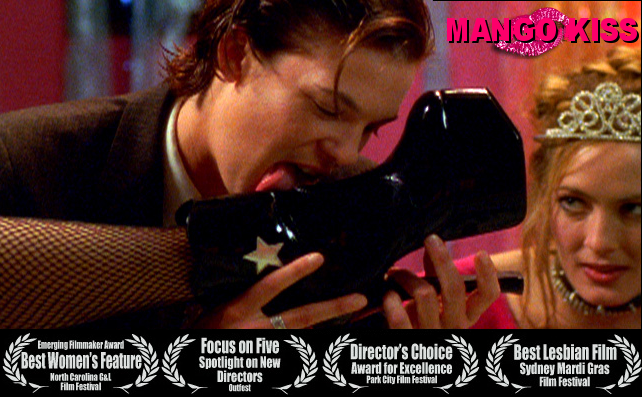
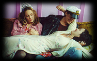

|
|
22. Mai 2006
"Mango Kiss" (US 2004)
Eine romantische Lesben Komödie, ein wildes Ausprobieren aller möglichen Rollenspiele und Beziehungskonstellationen.
“Mango Kiss” is a fish out of water comedy about Lou whose world is turned upside-down when she falls in love with her best friend Sassafras. Before Lou can get the courage to announce her desire to Sass, they move to San Francisco together to embark on their careers as queer performance artists. When they naively stumble into an underground world of role playing, non-monogamous S/M dykes a comedy of errors ensues as these wholesome girls get in over their heads.
Inspired by the bold women they’ve discovered, Lou takes the plunge and suggests that she and Sass become lovers, but Sass doesn’t want to jeopardize their friendship. Lou changes tactics and proposes that they try a non-monogamous role-playing experiment; Sass goes along willingly as she has been prodded to explore a little more by Kaz, her savvy arty queer best-boyfriend. Under the guise of doing research for their performance piece, they delve into to a princess/daddy role-play: Sass plays out a brat princess and Lou takes on a Sea Captain Daddy role.
 Lou enjoys a brief moment of bliss before the complications of non-monogamy heat up. When Sass meets a punk S/M-playing guitarist named Micky, she champions the advantages of non-monogamy to her free-spirited mother Emilia, but this old hippie artist offers a cautionary warning. A giddy Sass dismisses mom’s warning and reveals her crush to her new friend Leslie, but Leslie, a 1950’s housewife southern belle, sings the pleasures of monogamy. However, Sass doesn’t listen to the lone monogamist and why should she? They’ve worked out a fool proof plan: different loves with different roles. Meanwhile Lou is becoming more attached to Sass than she dare admit, but she makes a valiant effort to play by the rules as she offers to be a “bottom” for Chelsea Chuwawa--the slick and glamorous dominatrix.
“Over-the-top lesbian kink-farce”
-Ted Casablanca, E!online
“Thank you, ma’am. May we have another?”
-Connie Ogle, Miami Herald
Some theatre reviews of BERMUDA TRIANGLES ~ THE STAGE PLAY, on which the film is based upon:
“Ingenious...hilarious romp”
BAY AREA REPORTER ~ MAY 2, 1996
“puts the fun in dysfunctional”
SANTA FE REPORTER ~ THE BEST OF '97 ~ DEC. 17 1997
“a hell of a lot of fun”
SANTA FE REPORTER ~ SUMMER 1997
US 2004, R: Sascha Rice, B: Sarah Brown, Sascha Rice,
D: Danièle Ferraro, Michelle Wolff, Sally Kirkland, Dru Mouser,
Tina Marie Murray. 84min, eng. OF, Ö-Premiere
19:30 Uhr, Space04 Kunsthaus Graz, € 5.-
Links: